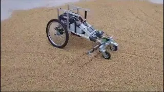
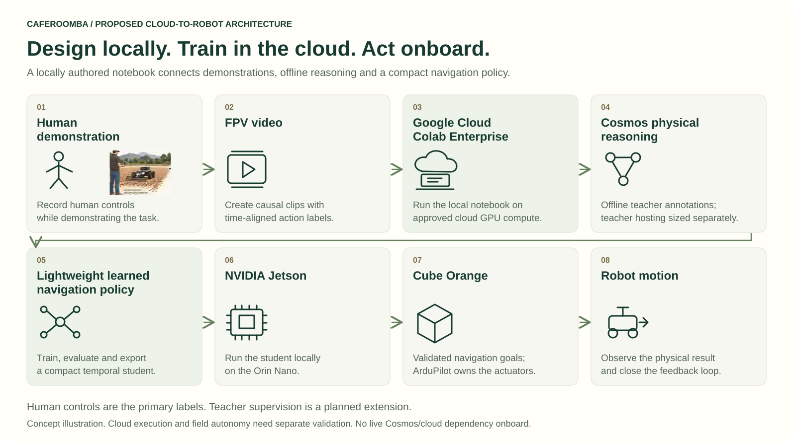
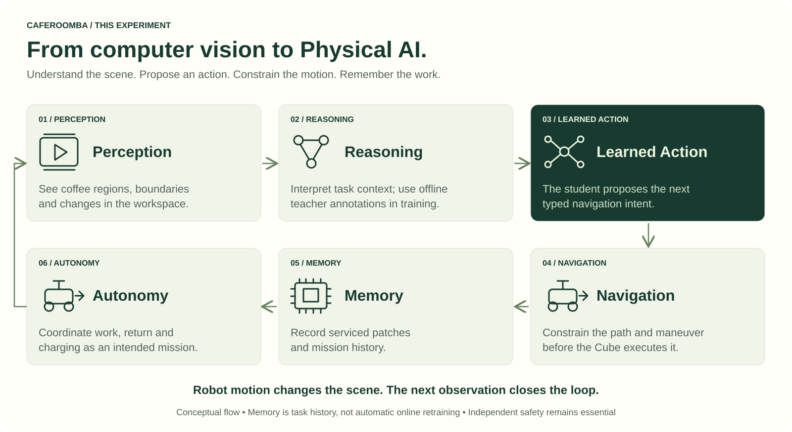
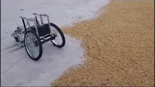

The notebook is the experiment.
Prepare video, synchronize human controls, define causal clips and test the pipeline in isolated local environments. Commit code—not credentials or private recordings.
Teaching a robot to work the coffee-drying patio—from human demonstrations to local visual navigation.
CPU baseline tested. Cloud-to-edge experiment in progress.
Short previews from the owner-supplied raw-data folders. Original playback speed; web-encoded, muted and looped.
From data/raw/fpv/runid001/. The rover is visible from behind, so this folder label does not yet establish a calibrated onboard FPV camera.
From data/raw/external/runid004/. External-view material helps explain the scene; it must not be mixed into an onboard FPV policy dataset.
Both clips are under 9 MB; combined video payload is 5.93 MB. Dataset previews are not proof of current autonomy. Acquisition/generation provenance and synchronized operator labels remain unverified. Playback is paused for reduced-motion and data-saving preferences.
Build the notebook locally.
Bring the heavy computation to Google Cloud Colab Enterprise.
Our goal is to learn coffee-patio navigation from human demonstrations: follow a coffee patch, correct left or right, recognize the end of a pass, and request a controlled 180° maneuver. The longer-term mission adds patch memory, return-home and verified charging.
We are a GPU-constrained project. The proposed advantage of Google Cloud Colab Enterprise is access to managed, configurable GPU runtimes without first owning a large training machine. We develop notebook code locally, validate it on small examples, then use the same versioned notebook and repository modules for an approved cloud run.
Prepare video, synchronize human controls, define causal clips and test the pipeline in isolated local environments. Commit code—not credentials or private recordings.
Import the notebook into Colab Enterprise, connect the private dataset and select an appropriately sized runtime. Use Cosmos as an offline teacher; train the smaller navigation student separately.
Evaluate on held-out runs, export ONNX, then benchmark the student on NVIDIA Jetson. Validated navigation objectives go to Cube Orange; the robot does not wait on a cloud response.
The notebook separates where we write code from where expensive computation runs. Cloud usage is billable and subject to quotas, capacity and approval. An L4/T4-sized student experiment does not imply the full Cosmos teacher fits on that GPU.
Current evidence: local synthetic notebook/CPU baseline. Colab Enterprise execution, live Cosmos annotations and target-device validation are separate milestones—not completed runs claimed by this page.
Platform references: Colab Enterprise overview · Runtime templates and GPUs · Usage pricing
CafeRoomba is about redistributing coffee beans on a drying patio—not vacuuming discarded grounds. The working area changes as coffee is spread into patches.
The research question: can human demonstrations teach a small onboard policy to follow that changing visual workspace, while independent controls constrain what the robot is allowed to do?
Identify a coffee region and its visible boundaries.
Navigation objectiveUse FPV observations and human controls to learn trajectory corrections.
CPU learning baselineValidate proposals against timing, vehicle state, maps and clearance.
Local integrationTrack serviced patches, return safely and verify charging readiness.
Mission roadmapOne model helps describe the work.
A smaller policy learns the navigation.
The Cube owns the actuators.

Architecture: Human demonstration → FPV video → Google Cloud Colab Enterprise → Cosmos physical reasoning → lightweight learned navigation policy → NVIDIA Jetson → Cube Orange → robot motion
Current execution is non-actuating. The merged shadow-mode software is not a motion-ready release. Training annotations must not become a live cloud dependency onboard.
Read the technical designThis experiment connects what a robot sees with what it proposes to do, what its navigation and safety layers permit, and what it remembers afterward.

Memory means serviced-patch and mission history, not autonomous online retraining. Reasoning supervision is developed offline; the onboard student and independent supervisor handle local decisions. The complete autonomy cycle is the research goal.
Synthetic clips, lightweight training, ONNX export and dry-run replay. The baseline CI job succeeded.
View the CI evidence Not field accuracy or target-device validation.Geofence parsing, stricter camera contracts, telemetry observation and shadow-mode recording are now integrated in the source, with hardware validation still pending.
Read the integration boundary Integration merged; full hardware and target-device validation pending.Authorized Cosmos inference, cloud training, Orin validation and supervised coverage/return trials.
Explore the acceptance gates No unverified performance or benefit claims.
The physical rover came first. Today’s software work makes the learning, navigation contracts and validation process explicit and reproducible.
These stills from owner-provided footage document the physical prototype. They do not demonstrate the newer Cosmos/student controller.
Media provenanceDescriptive modules. Explicit state.
Documented limits. Testable interfaces.
CPU fixtures and isolated environments.
UNDERSTAND THE SYSTEMMission states, turn handling and guards.
KNOW THE BOUNDARIESAuthority, freshness and motion-release gates.
DEVELOP THE POLICYCausal video, human labels and evaluation.
Developed in the Google Cloud & NVIDIA developer-community learning context. Edwin completed Intro to Inference: How to Run AI Models on a GPU (owner-reported).
Independent project. No endorsement, contest award or production certification is implied.
{kind=link}